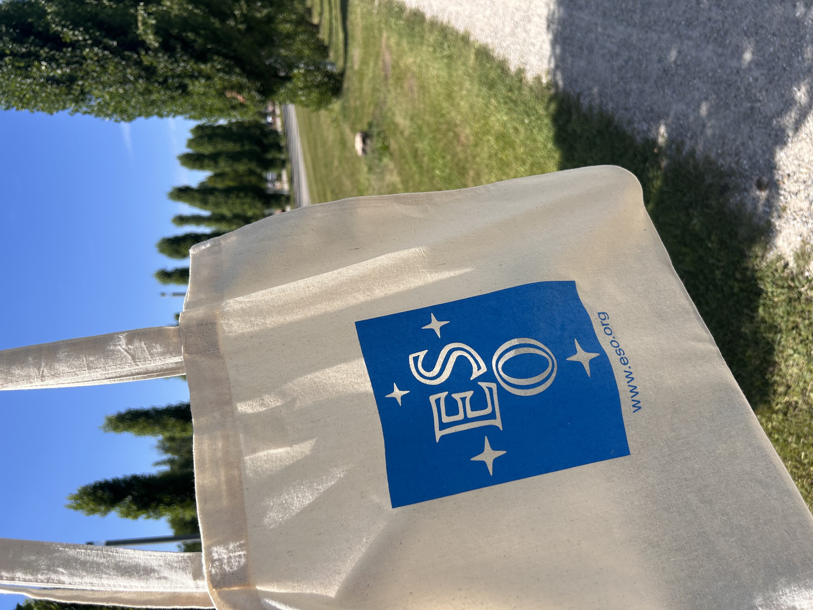

How did I get into astronomy?
The full story — from physics undergrad to astrophysics PhD.
Read →PhD Candidate at Swinburne University, Australia. Creatively and critically researching the universe.
I am currently pursuing a PhD at Swinburne University of Technology, where I investigate how we can use semi-analytical modelling combined with high redshift observations to understand how galaxies first formed and continue to evolve over time. I just completed my Masters of Research at Macquarie University where I was researching how our assumptions on how much star formation is happening in galaxies over time may be very biased by our inferred dust measurements. Previously, I graduated from the University of Newcastle with a Bachelor of Science (majoring in Physics) and a Bachelor of Mathematics (majoring in Pure and Applied Mathematics). During my time there, I developed a passion for teaching and outreach, focusing on creating engaging, accessible content tailored to diverse abilities, learning levels, and styles.
Research
Galaxy formation at high redshift
Using SAGE semi-analytic modelling + high-z observations to probe when and how the first galaxies assembled. PhD Year 1 — Swinburne.
Writing
Astrobites paper summaries
Summarising the latest astrophysics research for a student audience. New posts dropping regularly — check the link below.
Teaching
Course coordination & development
EPPREP930 at UoN. Also developing content videos for EPPHYS152 and EPPREP970.
Radio-based calibration of dust corrections reveals the locally calibrated Hα–radio relation overestimates the cosmic SFRD by more than two orders of magnitude at z ≳ 1.
Read about the paper → ESO 2025Semi-empirical modelling of cluster evolution and its influence on the cosmic star formation history, conducted during a 6-week ESO summer studentship.
Read about the project → Co-author 2025Contributing author on two papers characterising AGN and radio luminosity functions using the EMU and GAMA surveys.
See full publications → Masters ThesisA radio-calibration approach to dust extinction corrections and what it means for our picture of how much star formation has happened across cosmic history.
Read about the thesis year →How did I get into astronomy?
The full story — from physics undergrad to astrophysics PhD.
Read →
My experience as an ESO Summer Student
Six weeks at the European Southern Observatory — the project, the people, and Germany.
Read →What was it like to do a Master's thesis?
The challenges and rewards of a one-year research degree in astrophysics.
Read →
Back to Basics
Physics explainers and concept videos designed to make tricky ideas click — from first principles.
Explore Back to Basics →